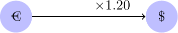
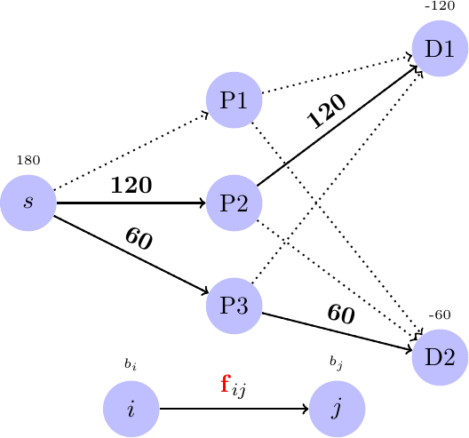
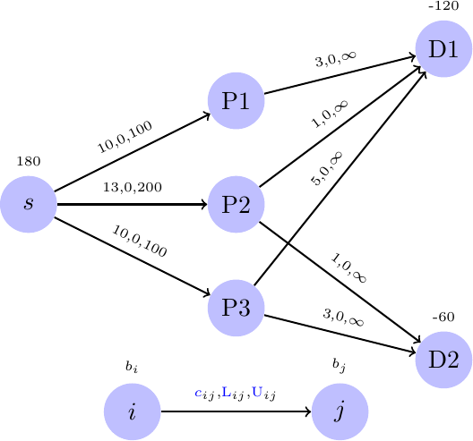

\(\newcommand{\R}{{\mathbb{R}}}\) \(\newcommand{\Z}{{\mathbb{Z}}}\) \(\newcommand{\N}{{\mathbb{N}}}\) \(\newcommand{\var}[1]{{\color{red}{\mathbf{#1}}}}\) \(\newcommand{\param}[1]{{\color{blue}{#1}}}\) \(\newcommand{\mathsc}[1]{{\normalfont\textsc{#1}}}\) \(\def\sc#1{\dosc#1\csod}\) \(\def\dosc#1#2\csod{{\rm{#1{\rm\small #2}}}}\) \(\newcommand{\set}[1]{{\sc#1}}\) \(\newcommand{\mathvar}[1]{\var{#1}}\) \(\newcommand{\mathpar}[1]{\param{#1}}\) \(\newcommand{\half}{{\small{\frac{1}{2}}}}\)
6. Network flow models¶
In this chapter a class of very important models will be introduced, all belonging to the class of network flow models. They can be thought of as representing the flow of some material (e.g., a liquid or a gas, but also vehicles or bits) along a (physical) network. These models lend themselves to theoretical analysis, to the development of specialized solution methods and to modeling much diverse situations, some of which apparently far from the concept of flows. The models we will introduce are, with few exceptions, linear optimization ones, and, thus, they inherit both the theory and the algorithms known for generic linear optimization. However their structure make them well suited for extremely efficient, specialized algorithms, capable of solving problems of huge size. The literature on network flow models and methods is very large; here we just mention [Ahuja et al., 1993], an excellent classic on this subject - although significant improvements have been observed in recent years and some of the proposed methods are nowadays slightly outdated, the book is an excellent reading for its clearness, depth and coverage.
6.1. Minimum cost flow¶
Assume a graph \(G\) is given. Definitions related to the elements of graph theory are briefly summarized in the Appendix: Graphs: basic definitions. The generic minimum cost flow model can be defined as follows:
- model:
Minimum cost flow
\(\set{V}\): set of vertices or nodes of the graph
\(\set{E} \subseteq V \times V\): set of arcs; unless stated otherwise, arcs are directed, i.e. \((i,j) \ne (j,i)\);
\(\param{b}_i\) (balance): net output / input balance for node \(i \in V\). This quantity represents the difference between the total outflow from node \(i\) and the total inflow for the same node. A positive balance is associated to nodes which generate flow, a negative one with consumer nodes, while zero balance corresponds to transit nodes;
\(\param{L}_{ij}, \param{U}_{ij}\) (lower and upper bounds on arc flows): on each arc \((i, j) \in E\) a minimum flow can be imposed (frequently equal to 0) as well as a maximum one (sometimes absent, or equal to \(+ \infty\))
\(\param{c}_{ij}\): cost associated with one unit of flow passing through arc \((i, j) \in E\);
\(\var{f}_{ij}\): the amount of flow through arc \((i, j)\)
Flow conservation or balance equations:
\[ \sum_{k: (i, k) \in E} \var{f}_{ik} - \sum_{h: (h, i) \in E} \var{f}_{hi} = \param{b}_i \qquad \forall \, i \in V \]This constraint forces the difference between flow out from node \(i\) and the entering flow to be equal to \(\param{b}_i\).
Bounds:
\[ \param{L}_{ij} \leq \var{f}_{ij} \leq \param{U}_{ij} \qquad \forall \, (i, j) \in E \]
Objective: total cost minimization:
\[ \min \sum_{(i, j) \in E} \param{c}_{ij} \var{f}_{ij} \]
In matrix form the problem might be represented as
where \(\param{A} \in \{-1, 0, +1\}^{|V| \times |E|}\) is the incidence matrix of the graph (see the Appendix Graphs: basic definitions). While for modeling purposes this representation is less useful than the explicit one, it becomes interesting for theoretical analysis. In particular it might be proven that the incidence matrix enjoys the total unimodularity property. This means that every square sub-matrix of \(\param{A}\) has either 0 or 1 or -1 determinant. A fundamental consequence of this is the fact that, as the inverse of an integer matrix with determinant \(\pm 1\) is still integer, all basic solution of the above linear optimization model are granted to be integer, provided that \(\param{b}, \param{L}, \param{U}\) are integer. Thus, in this case, from the fundamental theorem of linear optimization, if the problem admits an optimal solution, then it will admit an optimal basic solution whose components are all integer. In this case, thus, there is no need to look for specialized, and significantly more complex, algorithms if an integer solution is required. Integrality comes for free in network flow models, under the assumption of integrality of the above terms. It is worth reminding that this fundamental property is usually lost as soon as even a single constraint which cannot be considered as a balance equation or as a bound on the flow on a single arc is added to the model.
In the definition of the minimum cost flow model some assumptions are made, some of which can be relaxed, although with some disadvantages: usually, extending the model will compromise the integrality property of optimal basic solutions:
It is required that
\begin{align*} \sum_{i \in \set{V}} \param{b}_{i} & = 0 \end{align*}This assumption cannot be relaxed: if it is not satisfied, then no feasible flow can be found in the network. In fact, summing all balance equations, it can be seen that the variable associated to any arc \((i,j)\) appears in exactly two flow balance equations: the flow balance of node \(i\), where it appears with coefficient +1, and the flow balance of node \(j\), with coefficient -1. Therefore, summing all balance equation, a null left hand side is obtained. Thus, in order for the system of equations to admit solutions, it is necessary (although not sufficient) that the sum of the right hand sides is zero too.
The network is oriented; if this were not the case, frequently it is possible to associate to each undirected arc (an edge) a pair of directed arcs. This modeling solution is feasible, provided that a capacity can be assigned to each of the two directions; this is the case when a two-way road can be seen as two one-way roads, each of which with its own capacity. A different situation occurs when the two directions share the same capacity and thus, if a large amount of flow is present on one direction, the other one will have a more limited capacity. In this case, if the undirected edge is \((i, j)\) and the maximum (shared) capacity is \(\param{U}\), after the substitution of the edge with two directed arcs \((i,j)\) and \((j,i)\), the following constraint needs to be added
\begin{align*} \var{f}_{ij} + \var{f}_{ji} & \leq \param{U} \end{align*}This constraint is a linear inequality, so the overall problem is again a linear optimization one, although no more a minimum cost network flow problem. In fact this constraint cannot be seen as a flow balance constraint or a simple bound on flow variables. The main negative consequence of this, besides not being able to exploit the specialized algorithms for network flow problems, is that the inclusion of even a single constraint of this kind usually destroys the integrality property of the problem. Thus, if an integer flow is looked for, this will not be granted by simply solving the linear optimization problem.
The flow is “single commodity”. Thus the demand of nodes with negative balance can be satisfied by the production of any node whose balance is positive. Sometimes, however, it is necessary to deal with separate flows; as an example, consider a transportation network in which some origin nodes produce vehicles and some destination nodes ask for produced vehicles: if products differ in color, size, brand, it will be necessary to keep all of the flows of each product type well separated from each other, so that each customer will receive the correct quantity of the required products. This situation originates so–called multi-commodity flow models. It is easy to take into account different flow types by adding a further index to each flow variable, like, e.g., \(\var{f}_{ij}^k\) meant to model the flow on arc \((i,j)\) of products of type \(k\). In some cases these multiple flows give simply rise to several, distinct and independent, network flow models, one for each flow type. Sometimes, however, there will be “linking” constraints which create a dependency between flows of different commodities. An elementary example is, again that of shared arc capacity. If the maximum amount of flow along arc \((i,j)\) is \(\param{U}\), this limit must not be exceeded, whichever the commodity associated to that arc. As an example, referring again to the vehicle production example, transportation on each arc might be done with a single truck with a finite capacity of \(\param{U}\) vehicles. To model this situation we might simply add constraints like:
\begin{align*} \sum_{k \in \set{ProductTypes}} \var{f}_{ij}^k & \leq U_{ij} \end{align*}Again, this linear constraint usually destroys the integrality property enjoyed by pure network flow problems.
No flow losses or gains are possible long an arc. It is thus assumed that the amount of flow entering an arc is kept unchanged until the end of the arc. Sometimes, however, we might wish to model arc losses or gains. As an example, in an hydraulic network, there might be flow losses along pipes, proportional to the amount of flow. In modeling financial flows it might happen that the flow leaving a node represents an amount of money, e.g., in €, while at the end of the arc we would like to have that amount in US$, through a multiplication by the current exchange rate. So, as an example, if 100€ start from arc \((i,j)\), they will be transformed into, say, 120 US$ at the end of the arc:

A model including this kind of behavior can be easily built starting from the generic one. In fact it is sufficient to include the multiplier on the arc in the corresponding balance equation. In particular, if flow along a specific arc \((i,j)\) gets multiplied by a factor \(\theta\), the balance equation associated to the destination node should become
\begin{align*} \sum_{k: (j, k) \in E} \var{f}_{jk} - \sum_{h: (h, j) \in E, h \ne i} \var{f}_{hj} - \theta \var{f}_{ij} = \param{b}_j \qquad j \in V \end{align*}In the above balance equation, associated to node \(j\), the flow going out from the node, assumed to be in US$, is simply summed as usual; however, the flow entering the node includes the special case of a flow from a € node, \(i\) to \(j\) and, thus, a multiplication factor is introduced. This situation can be generalized to the case in which several entering arcs carry flows which need a transformation before entering node \(j\). Again, the model remains a linear one, although no more a network flow one and, in general, the integrality property does not hold anymore.
The flow is assumed to be stationary; this means that a constant quantity is “flowing” along every arc and there is no dynamics: flows are constant over time. Sometimes this is not desirable and we would like to model flows which vary in time. We will see later, in section Dynamic Flows, how to modify the basic model in order to deal with this situation
An example of a general model for the minimum cost flow problem is given in the following figure:
In this figure, the problem is graphically represented, including all data: above each node the balance is reported, with the convention that nothing is written above nodes with zero balance. On each arch we represent the unit cost, the lower and the upper bound on the flow.
Solving this example with a Linear Optimization software the optimal flow turns out to be:

The solution represented above has been found by running a linear programming solver with the following model:
# generic min cost newtwork flow model
#
# illustration of the special network syntax available in AMPL
set NODES;
set ARCS within NODES cross NODES;
param cost {ARCS}, default 0;
param L {ARCS} >= 0, default 0;
param U {(i,j) in ARCS} >= L[i,j], default Infinity;
param balance {NODES}, default 0; # balance net-out minus net-in
minimize TotalCost;
node node {k in NODES}: net_out = balance[k];
arc Flow {(i,j) in ARCS} >= L[i,j], <= U[i,j],
from node[i], to node[j], obj TotalCost cost[i,j];
and the following data:
param: NODES: balance :=
s 180
P1 0
P2 0
P3 0
D1 -120
D2 -60;
param: ARCS: cost L U :=
s P1 11 . 100
s P2 13 . 200
s P3 10 . 100
P1 D1 3 . .
P1 D2 5 . .
P2 D1 1 . .
P2 D2 1 . .
P3 D1 5 . .
P3 D2 3 . .
;
6.2. Applications of minimum cost flow models¶
- application:
Production and distribution
Logistics, and, in particular, distribution, is one of the fields where the minimum cost flow model finds many applications. As an example, consider a set of plants, each with a given maximum production capacity and a set of distributors; consider also a set of customers, whose demand for the product is assumed to be known.
In a situation like this one, we would like to plan both production as well as transportation in order to minimize the total costs. Production might have different costs, depending on the producing plant; transportation, also, has a cost which depends both on the producer’s location as well as on the customer’s one. Reconsider the example of the preceding paragraph:

We might consider the example as a production/transportation case: node \(s\) is a decision node, from which production orders are issued. Each production order consists of a quantity to be produced from a specific producer (P1, P2, P3). The capacity on production arcs \((s,P1), (s,P2), (s,P3)\) are the maximum production capacities of the three plants (100, 200, 100, respectively). The costs associated to each of these arc are production costs: P1 and P3 produce at 10€ per unit, while P2 has a production cost of 13€. Arcs from P1, P2, P3 to D1 and D2 can be thought of as transportation arcs, with unlimited capacity (in this example) but different unit costs, raging from 1 per unit out of producer P2, to 5 per unit in two links from the other producers. The balance of nodes D1 and D2 represent demand, while an equivalent balance, of opposite sign, is associated to the start node \(s\).
It might seem that in this model flows of different kinds are present (production orders, finished good transportation): however, we can consider each flow as an order (from the producers to the customer). There is no distinction among flows, as any destination can be satisfied with flows from any of the connected nodes.
This model shows how it is possible to model two important decisions (production and transportation) by means of a single model which, in this case, is a network flow one. Being able to solve this global problem can be a great advantage, as decisions are taken in a non myopic way: traditionally, first production would be allocated to existing plants, minimizing production costs and then products would be shipped at minimum cost to destinations, thus taking the two decisions in different, separated, stages. In this example, minimizing just production costs would lead to produce all 180 parts in plants P1 and P3, possibly 90 each (but any other combination not exceeding production capacity would cost the same). Taking into account that shipping costs from P1 are 3 towards D1 and 5 towards D2, a slightly less myopic solution would be to produce 100 at P1 and 80 at P2, with a total production cost 1,800€. From there, transportation costs are: \(3 \times 100 + 5 \times 20 + 3 \times 60 = 580\), with total cost 2,380€. On the other hand, the optimal solution reported has a total cost 2,360€, which is only slightly more convenient; although the difference is small, the structure of the solution is quite radically different and it is not difficult to see that in more complex production/transportation applications, the difference between a solution found by optimizing single stages in the process may be arbitrarily worse than the optimal one.

© Fabio Schoen 2024